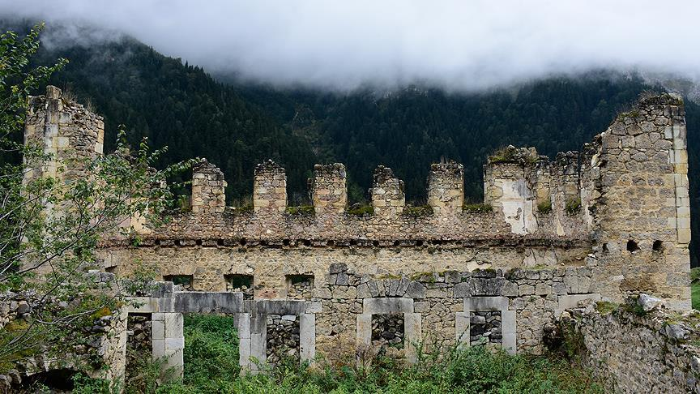
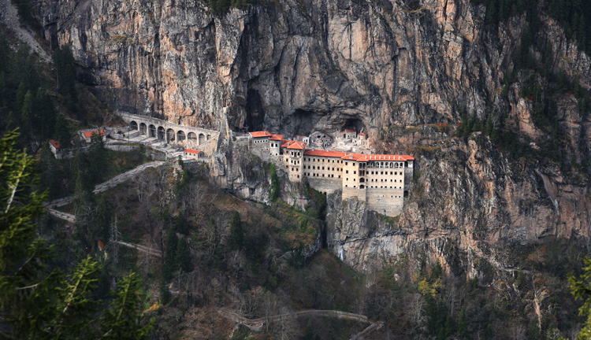

Amasra, Batı Karadeniz Bölgesinde, Bartın iline bağlı bir ilçedir. Denize doğru uzanmış bir burun, burnun iki yanında korunaklı birer liman görevi gören iki koy ve ana karaya bağlı bağımsız adalarına sahip olan Amasra, 3000 yıllık tarihi, hem çekicilik ve balıkçılığa dayanan yerel sanatları, hem de kendini çevreleyen ormanlık alanlarına sahip bir yerleşim yeridir. Amasra halen özgün balık lokantaları, otelleri ve ev pansiyonlarına sahip bir turizm bölgesidir. Sanatçı Barış Akarsu'nun memleketidir. Akarsu, Ocak 2007'de çıkardığı son kasetini Amasralılara ithaf etmiştir.
Dumanlı, Gümüşhane ilinin merkez ilçesine bağlı bir köydür. Köyün eski adı Santa olup yedi köyden oluşan Rum bölgesini oluşturmaktaydı. 1924 yılı sonrası mübadele ile tüm rumlar Yunanistan'a gönderilince bu yedi köy Dumanlı adında tek muhtarlığa bağlı mahalleler haline getirilmiş ve çevre köyler halkı yerleşmiştir. Her mahallede birer kilise ve merkezde Rum okulu bulunmaktaydı. Günümüzde ulaşım güçlüğü ve medeniyete uzaklığı gibi avantajları nedeniyle orijinal yapısını hala korumaktadır.
Sümela Manastırı, Trabzon ili, Maçka ilçesi, Altındere vadisi sınırları içerisinde yer alan (Antik Yunanca adı: Panagia) deresinin batı yamaçlarında Kara (Antik Yunanca adı: Mela) tepesi üzerinde deniz seviyesinden 1.150 m yükseklikteki eski Rum Ortodoks manastır ve kilise kompleksi olup, tam adı Panagia Sumela (Παναγία Σουμελά) veya Theotokos Sumela'dır.